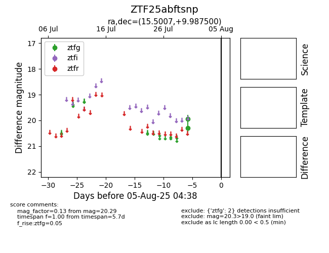

Target ZTF25abftsnp at 2025-08-05 04:38, see:
FINK: fink-portal.org/ZTF25abftsnp
Lasair: lasair-ztf.lsst.ac.uk/objects/ZTF25abftsnp
ALeRCE: alerce.online/object/ZTF25abftsnp
alt names
ZTF25abftsnp (ztf,fink)
coordinates:
equatorial (ra, dec) = (15.5007,+9.98750)
galactic (l, b) = (127.2364,-52.79592)
photometry
last ztfg=20.29
2 ztfg detections
